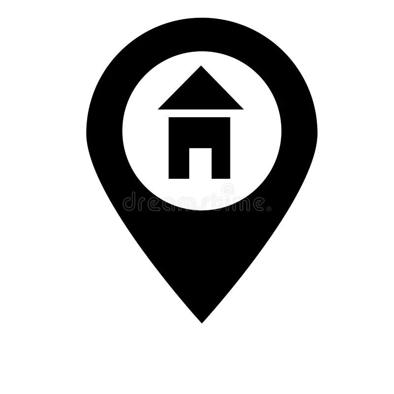
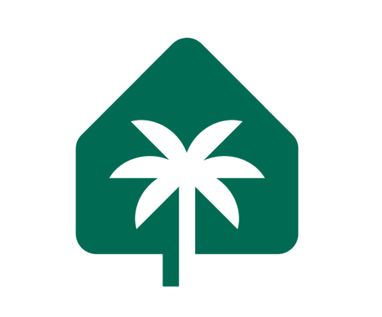

Denis Alkin
Objective: Hotel Manager, Operations Director, Financial Director
Expected Salary: $5,000/month (Annual: $60,000)
Contact Information
Phone: +1 702 572 32 14


 Location: USA, Florida, North Miami
Key Competencies
- Financial flow management and investment projects.
- Development and implementation of reporting systems (USALI).
- Business process optimization and KPI performance control.
- Personnel management, including recruitment and training.
- Experience working with international markets.
- Process automation using modern CRM and PMS systems.
- Financial and economic activity management, including budgeting.
Work Experience
PT SOLAR PROPERTY BALI (Indonesia) - General Director (May 2024 – December 2024)
- Management of the company’s operational activities.
- Optimization of pricing policies, resulting in significant growth in RevPAR and ADR by 40% in just three months.
- Development of an automated rate sheet system for dynamic pricing.
- Successfully expanded the number of managed properties from 25 to 58 within six months.
- Attracted $500,000 in new investments.
- Implemented an automated reporting system for investment property management.

Bali Invest Villas (Bali Invest Club) (Indonesia) - Financial Director (May 2023 – April 2024)
- Worked closely with owners to restructure the company, achieving significant results, including the expansion of the property portfolio to 61 units (10 rooms, 40 apartments, and 11 villas), enhancing stability and competitiveness.
- Developed financial models and managed investment projects.
- Negotiated and signed contracts with investors.
- Introduced and managed financial reporting systems based on USALI standards.
- Controlled and optimized business processes in all company departments.